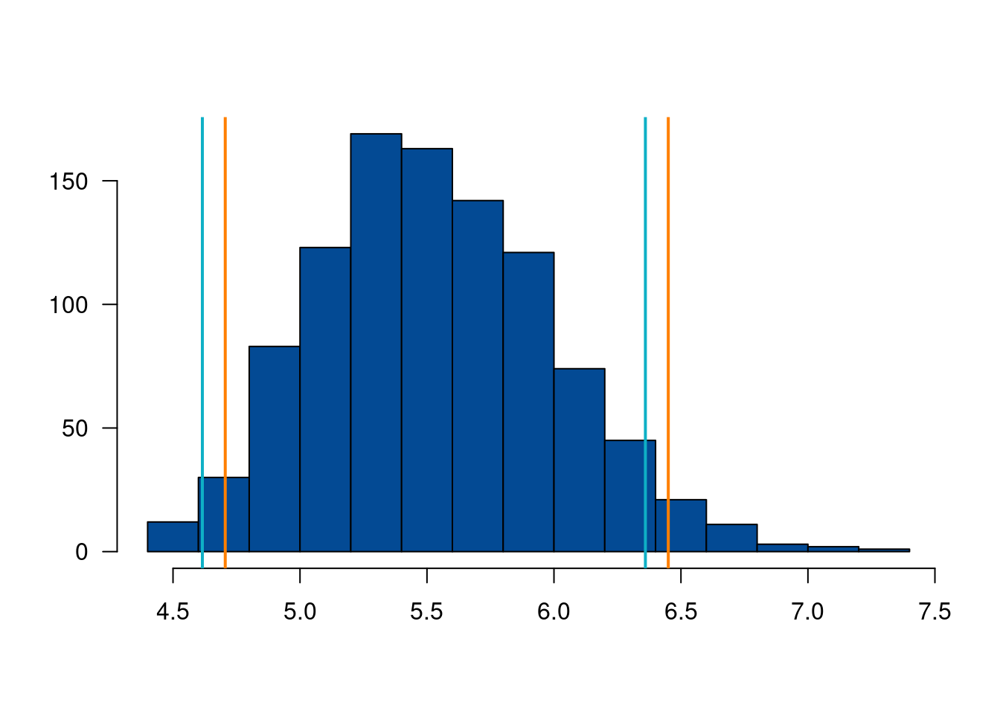

Cuando se extrae una muestra de una población que no es normal y se requiere estimar un intervalo de confianza se pueden utilizar los métodos de estimación bootstrap. Existen varias versiones del método. Una presentación básica del método se describe a continuación:
El artículo de In-use Emissions from Heavy Duty Dissel Vehicles (J.Yanowitz, 2001) presenta las mediciones de eficiencia de combustible en millas/galón de una muestra de siete camiones. Los datos obtenidos son los siguientes: \(7.69, 4.97, 4.56, 6.49, 4.34, 6.24\) y \(4.45\). Se supone que es una muestra aleatoria de camiones y que se desea construir un intervalo de confianza del 95% para la media de la eficiencia de combustible de esta población. No se tiene información de la distribución de los datos. El método bootstrap permite construir intervalos de confianza del 95% -
Para ilustrar el método suponga que coloca los valores de la muestra en una caja y extrae uno al azar. Este correspondería al primer valor de la muestra bootstrap \(X^{∗}_{1}\). Después de anotado el valor se regresa \(X^{∗}_{1}\) a la caja y se extrae el valor \(X^{∗}_{2}\) , regresandolo nuevamente. Este procedimiento se repite hasta completar una muestra de tamaño \(n\), \(X^{∗}_{1}\),\(X^{∗}_{2}\),\(X^{∗}_{2}\),\(X^{∗}_{n}\), conformando la muestra bootstrap.
Es necesario extraer un gran número de muestras (suponga \(k = 1000\)). Para cada una de las muestra bootstrap obtenidas se calcula la media \(\bar{X^{∗}_{i}}\), obteniéndose un valor para cada muestra. El intervalo de confianza queda conformado por los percentiles \(P_{2.5}\) y \(P_{97.5}\). Existen dos métodos para estimarlo:
| Método 1 | \((P_{2.5} \hspace{.2cm}; \hspace{.2cm} P_{97.5})\) |
| Método 2 | \((2\bar{X} − P_{97.5}\hspace{.2cm}; \hspace{.2cm} 2\bar{X} − P_{2.5})\) |
Ejemplo
Construya el intervalo de confianza por los dos métodos y compare los resultados obtenidos. Tomado de Navidi(2006)
x=c( 7.69, 4.97, 4.56, 6.49, 4.34, 6.24, 4.45) # datos muestra
boot=sample(x,7000,replace=TRUE) # se extraen n x m muestras
b=matrix(boot,nrow=1000,ncol=7) # se construye matriz de n x m
mx=apply(b,1,mean) # se calculan m medias por filaic1=quantile(mx, probs=c(0.025, 0.975)) # se calcula IC método 1
ic1 2.5% 97.5%
4.757143 6.418643 ic2=c(2*mean(mx)-ic1[2], 2*mean(mx)-ic1[1]) # se calcula IC método 2
ic2 97.5% 2.5%
4.666683 6.328183 hist(mx, las=1, main=" ", ylab = " ", xlab = " ", col="#034A94")
abline(v=ic1, col="#FF7F00",lwd=2)
abline(v=ic2, col="#0EB0C6",lwd=2)
Como se puede observar, el segundo estimador corrige el intervalo